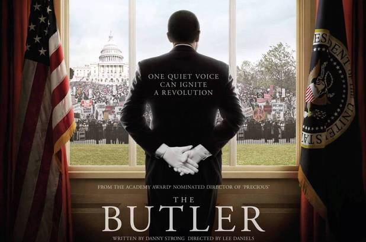

The Butler
Plot
In 2009, an elderly Cecil Gaines recounts his life story, while waiting at the White House to meet the newly inaugurated president.
In 1926, at the age of seven, Gaines is raised on a cotton plantation in Macon, Georgia, by his sharecropping parents. One day, the farm's owner, Thomas Westfall, rapes Cecil's mother, Hattie Pearl. Cecil's father confronts Westfall, and is shot dead. Cecil is taken in by Annabeth Westfall, the estate's caretaker and owner's grandmother, who trains Cecil as a house servant.
In 1937, at age eighteen, he leaves the plantation and his mother, who has been mute since the incident and presumably dies of old age by the time the plantation shuts down. One night, Cecil breaks into a hotel pastry shop and is, unexpectedly, hired. He learns advanced skills from the master servant, Maynard, who, after several years, recommends Cecil for a position in a Washington D.C. hotel. While working at the D.C. hotel, Cecil meets and marries Gloria, and the couple have two sons: Louis and Charlie. In 1957, Cecil is hired by the White House during Dwight D. Eisenhower's administration. White House maître d' Freddie Fallows shows Cecil around, introducing him to head butler Carter Wilson and co-worker James Holloway. At the White House, Cecil witnesses Eisenhower's reluctance to use troops to enforce school desegregation in the South, then his resolve to uphold the law by racially integrating Little Rock Central High School in Arkansas.
The Gaines family celebrates Cecil's new occupation with their neighbors, Howard and Gina. Louis, the elder son, becomes a first generation university student at Fisk University in Tennessee, although Cecil feels that the South is too volatile; he wanted Louis to enroll at Howard University instead. Louis joins a student program led by Southern Christian Leadership Conference (SCLC) activist James Lawson, which leads to a nonviolent sit-in at a segregated diner, where he is arrested. Furious, Cecil confronts Louis for disobeying him. Gloria, who feels that Cecil puts his job ahead of her, descends into alcoholism and an affair with the Gaines's neighbor, Howard.
In 1961, after John F. Kennedy's inauguration, Louis and a dozen others are attacked by the Ku Klux Klan while traveling on a bus in Alabama. Louis is shown participating in the 1963 Birmingham Children's Crusade, where dogs and water cannons were used to stop the marchers, one of the movement's actions which inspired Kennedy to deliver a national address proposing the Civil Rights Act of 1964. Several months after the speech, Kennedy is assassinated. His successor, Lyndon B. Johnson, enacts the transformative legislation into law. As a goodwill gesture, Jackie Kennedy gives Cecil one of the former president's neckties before she leaves the White House.
Louis is later shown participating in the 1965 Selma Voting Rights Movement, which inspired Johnson to demand that Congress enact the landmark Voting Rights Act of 1965. Johnson also gives Cecil a tie bar.
In the late 1960s, after civil rights activist Martin Luther King, Jr.'s assassination, Louis visits and tells his family that he has joined the Black Panthers. Outraged, Cecil orders Louis and his girlfriend, Carol, to leave his house. Louis is soon arrested, and Carter bails him out. Cecil becomes aware of President Richard Nixon's plans to suppress the movement.
The Gaines' other son, Charlie, confides to Louis that he plans to join the Army in the war in Vietnam. Louis announces that he won't attend Charlie's funeral if he is killed there because while Louis sees Americans as multiple races, Charlie sees the country as one race. A few months later, Charlie is killed and buried at Arlington National Cemetery. Louis does not attend. However, when the Black Panthers resort to violence in response to racial confrontations, Louis leaves the organization and returns to college, earning his master's degree in political science and eventually running for a seat in Congress.
Meanwhile, Cecil confronts his supervisor at the White House over the unequal pay and career advancement provided to the black White House staff. With President Ronald Reagan's support, he prevails, and his professional reputation grows to the point that he and his wife are invited by President and Nancy Reagan to be guests at a state dinner. Yet at the dinner and afterwards, Cecil becomes increasingly uncomfortable with the class divisions in the White House. Finally, after witnessing Reagan's refusal to support economic sanctions against South Africa, he resigns. Afterwards, Cecil and Gloria visit the Georgia plantation where he was raised, which by then had long been abandoned.
Gloria, wanting Cecil to mend his relationship with Louis, reveals to him that Louis has told her that he loves and respects them both. Realizing his son's actions are heroic, Cecil joins Louis at a Free South Africa Movement protest against South African apartheid, and they are arrested and jailed together.
In 2008, Gloria dies shortly before Barack Obama is elected as the nation's first African-American president, a milestone which leaves Cecil and Louis in awe. Two months, two weeks and one day later, Cecil prepares to meet the newly inaugurated President at the White House, wearing the articles he had received from the previous presidents.
Cast
Director:
- Lee Daniels
Writers:
- Danny Strong
- Wil Haygood
Stars
- Forest Whitaker as Cecil Gaines
- Oprah Winfrey as Gloria Gaines
- John Cusack as Richard Nixon